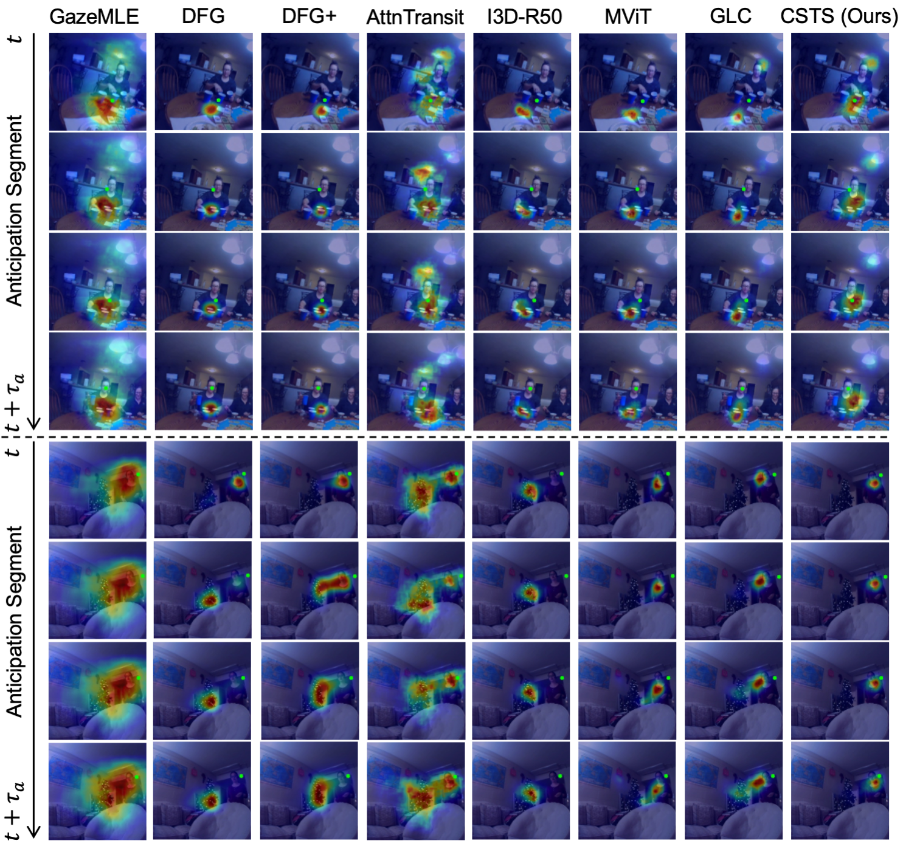

In the input sequence, the camera view shifts from the paper held by the camera wearer to the standing speaker who asks a question. Then the sitting speaker on the far right answers the question, which is captured by the audio stream. In the anticipation sequence, the camera wearer's gaze shifts towards the sitting person's head after hearing her response. In this case, the audio stream (the sitting person's response) is an important stimulus that triggers this gaze movement.
Abstract
Egocentric gaze anticipation serves as a key building block for the emerging capability of Augmented Reality. Notably, gaze behavior is driven by both visual cues and audio signals during daily activities. Motivated by this observation, we introduce the first model that leverages both the video and audio modalities for egocentric gaze anticipation. Specifically, we propose a Contrastive Spatial-Temporal Separable (CSTS) fusion approach that adopts two modules to separately capture audio-visual correlations in spatial and temporal dimensions, and applies a contrastive loss on the re-weighted audio-visual features from fusion modules for representation learning. We conduct extensive ablation studies and thorough analysis using two egocentric video datasets: Ego4D and Aria, to validate our model design. We demonstrate the audio improves the performance by +2.5% and +2.4% on the two datasets. Our model also outperforms the prior state-of-the-art methods by at least +1.9% and +1.6%. Moreover, we provide visualizations to show the gaze anticipation results and provide additional insights into audio-visual representation learning.
The Proposed Method
We exploit the transformer-based encoders `phi(x)` and `psi(a)` to extract the representations of the video frames `x` and audio signals `a`. We then employ a Contrastive Spatial-Temporal Separable (CSTS) audio-visual fusion approach. Specifically, a spatial fusion module captures the correlation between audio embeddings and spatial appearance-based features; a temporal fusion module captures the temporal correlation between the visual and audio embeddings; and a contrastive loss is applied on fused audio-visual embeddings to facilitate the representation learning. Finally, spatially and temporally fused audio-visual features are merged and fed into a decoder for future gaze anticipation.
Demo Video
Experiment Results
Examples

Additional Examples
BibTeX
@article{lai2023listen,
title={Listen to look into the future: Audio-visual egocentric gaze anticipation},
author={Lai, Bolin and Ryan, Fiona and Jia, Wenqi and Liu, Miao and Rehg, James M},
journal={arXiv preprint arXiv:2305.03907},
year={2023}
}